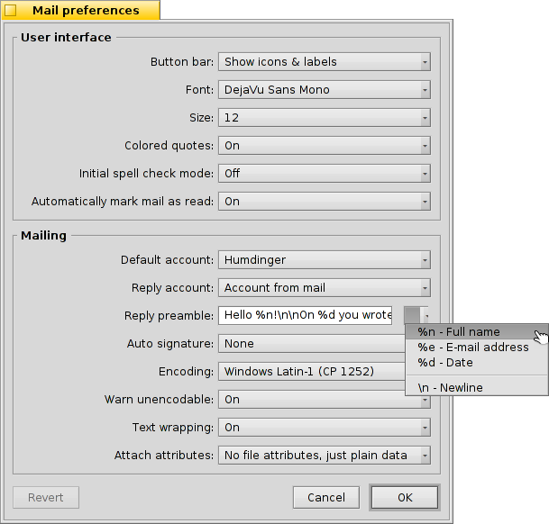

Français
Français Català
Català Deutsch
Deutsch English
English Español
Español Italiano
Italiano Magyar
Magyar Polski
Polski Português
Português Português (Brazil)
Português (Brazil) Română
Română Slovenčina
Slovenčina Suomi
Suomi Svenska
Svenska 中文 ［中文］
中文 ［中文］ Русский
Русский Українська
Українська 日本語
日本語| Index |
| Lecture des messages Créer des nouveaux messages Préférences |
 Mail
Mail
| Deskbar : | ||
| Localisation : | /boot/system/apps/Mail | |
| Réglages : | ~/config/settings/Mail/ ~/config/settings/Mail/Menu Links/ - Les objets mis ici apparaissent dans le menu contextuel de la boite de réception ~/config/settings/Mail/signatures/ - Emplacement pour stocker les signatures ~/config/settings/Mail/status/ - Emplacement pour stocker les statuts personnels |
Mail est le visonneur et l'éditeur de courriel par défaut de Haiku. Il ne fait pas lui même ni l'envoie ni la réception de courriel, dont mail_daemon s'occupe et qui peut être configuré par E-mail.
Cette article est une vue d'ensemble de l'application Mail. L'Atelier : Gérer son courrier contient plus d'information sur le fonctionnement du courriel dans Haiku.
 Lecture des messages
Lecture des messages
L'ouverture d'un fichier de courrier se fait par un double-clic. L'interface est assez simple :

Un menu et une barre d’outils éventuelle en haut, avec une zone contenant les attributs intéressants du courriel (À, De, Objet, Date) en dessous et le corps du message. Si le message contient des caractères étranges ou apparaît vide, essayez de changer le depuis le menu déroulant.
Lorsqu’il y a des pièces jointes au courriel, elles sont listée à la fin du message. Un menu déroulant s’ouvre avec un clic-droit sur l’une d’elles qui propose d’ ou d’. Vous pouvez aussi le glisser-déposer sur le bureau ou une fenêtre du Tracker.
La plupart des menus et des éléments de la barre d'outils étant assez explicites, Nous allons nous concentrer sur les points phares.
File (Fichier)
Lorsque vous fermez la fenêtre d’un nouveau courriel, son statut est normallement changé de « New » (nouveau) à « Read » (lu). Mais vous pouvez aussi utiliser d’autres statuts en le choisissant dans le sous-menu . Vous trouverez aussi l’option pour créer votre propre statut qui sera enregistré dans ~/config/settings/Mail/status/.
Edit (Édition)
Vous trouverez un élément pour modifier les préférences de Mail () (voir plus bas) et un raccourci pour gérer vos comptes () qui ouvrira la fenêtre des préférences de E-mail.
View (Vue)
Vous aurez rarement besoin de ce menu.
| ALT H | Montre toutes les en-têtes du courriel, pour tracer le chemin parcouru par le courriel par exemple. | ||
| Affiche le courriel brut, i.e. avec tous les caractères de contrôle et sans la coloration des citations et des URL de Mail, par exemple. |
Message
Des explications sur les options de réponse sont sans doute nécessaires.
| ALT R | La réponse habituelle au serveur qui vous a envoyé le courriel. NOTE : dans le cas d’une liste de diffusion, la réponse est envoyée à la liste, pas seulement à la personne qui a écrit le message ! | ||
| OPT ALT R | Par contre, cette option envoie directement et seulement à la personne contenue dans l’attribut « From ». | ||
| SHIFT ALT R | Répond à l’expéditeur et aux autres destinataires (en copie carbonne) du courriel d’origine. |
The items to , and are again pretty self-explaining.
When you've opened an email from a Tracker or query result window, and will move to the previous/next email in the list.
collects all email addresses from the header and the actual email body in a submenu. Choosing an address will open the People application in order to complete and save the contact information.
Queries (Requêtes)
This doesn't work yet, but is intended to hold queries that would show all mail related to the currently open mail, like all from the same sender or same subject/thread.
Créer des nouveaux messages
A new email is created by invoking the menu or the corresponding icon from the tool bar of an open email. Or you just start the Mail application or choose from the context menu of the mailbox icon in the Deskbar.

The window is pretty similar to the one when reading mails. The menu and tool bar items are slightly different and the text boxes have to be filled with the recipient's email address, subject and so on, of course.
is short for the anachronistic term "carbon copy" and results in copies of your mail being sent to the listed people. The difference to just listing a buch of addresses in the "To" field is, that you don't directly address the cc'ed people, thereby signaling that you probably don't expect an answer of them.
means "blind carbon copy" which does practically the same as "Cc", but hides the recipients from each other.
You can enter several recipients by separating their addresses with a comma. , , and are pop-up menus. They contain all email addresses on your system found by a query for People files. Their "Group" attribute will sort them in corresponding submenus.
Encore une fois, nous allons nous concentrer sur les fonctions les plus intéressantes des menus.
File (Fichier)
With you can store your work so far and come back to it later. To load it again, choose it from the submenu that will list the result of a query for all mails with the status "Draft".
Edit (Édition)
and or their respective shortcuts ALT ← / → are used to add/remove a level of quoting by adjusting the number of ">" symbols in front of quoted lines. Just select some text in all the lines you want un/quoted and invoke the menu item.

currently only offers corrections of English texts by marking wrong or unknown words red and showing them in italic. Right-clicking such a word opens a context menu offering suggestions to correct the word or to it to the accepted vocabulary.
Then, there are again the items to open Mail's (see below) and a shortcut to managing your , which will open the E-mail preference panel.
Message
With you can add predefined texts to the end of your mail. From its submenu you can choose a specific or one.

You create new or edit existing signatures with , which will open a window where you enter the text itself and the title of your new sig. There, in the menu, you find items to a specific signature or or the currently loaded one, Signatures should be saved in ~/config/settings/Mail/signatures.
Use and to add/remove files as attachments. You can also drag & drop files from a Tracker window. Be careful though to drop those in the header section (To/From/Subject area at the top) or they'll get pasted into the email body if they are text files.

Les fichiers joints sont listés sous la section d'entête. Vous pouvez retirer un mail en invoquant le menu contextuel ou en le sélectionnant avant de presser la touche Suppr.
Queries (Requêtes)
This doesn't work yet, but is intended to hold queries that would show all mail related to the currently open mail, like all to the same recipient or same subject/thread.
Préférences

Les préférences de courrier se présentent en deux parties :
User interface (Interface utilisateur)
| Options to show labels under the icons or hide the tool bar completely. | ||
| Sets the type of font used for the email text. | ||
| Sets the font size. | ||
| Colors different levels of quotation. | ||
| Turns the spell checker on/off on startup. | ||
| If you close an email with the Status "New", you can have it automatically marked as "Read". |
Mailing (Publipostage)
| If you have several email accounts, this specifies which to use by default when creating a new message. | ||
| When you reply to a mail, you can either always set in the pop-up menu above, or use the , which will send the mail from the same account that received the original message. | ||
This is inserted before the quoted text in your reply. You can use various variables from the pop-up menu next to the text field. Example: "Hello %n!\n\nOn %d you wrote:\n" produces this:
Hello Dr. Hawking! On Mon, 18 Jan 1998 02:55:16 +0800 you wrote: > so thanks again for the inspiration concerning the cosmological constant. > ...and the rest of the quoted text following... | ||
| Adds a signature automatically to the end of the mail. | ||
| Sets the default encoding. | ||
| If your mail contains characters that can't be encoded with the currently set encoding method, you can turn on being warned about that. That gives you the opportunity to change the encoding before sending. Otherwise unencodable characters are replaced by rectangle symbols. | ||
| Inserts line-breaks every 76 characters which makes mails easier to read. | ||
| You can choose to send BFS' attributes of a file alongside the attachments. This is nice for other Haiku users, as they'll get a "complete" file (think artist, album, title attributes of MP3 files), but may cause confusion (or even suspicion) with others, who will wonder what the additional "BeOS Attributes" attachment might be... Should you opt not to send attributes with your attachments, remember zip up your files before you send them or you'll strip away BFS attributes. |